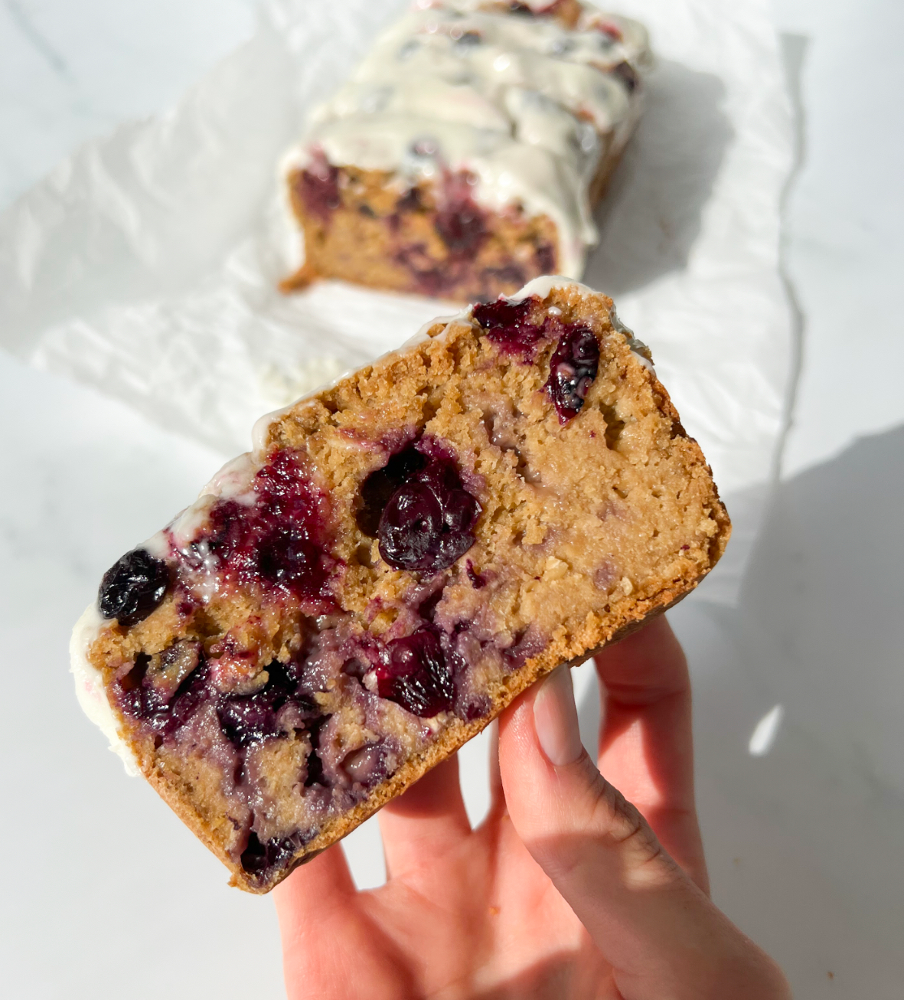

Lemon Blueberry Loaf

This Lemon Blueberry Loaf is gluten-free, dairy-free, super moist, easy to
make, and DELISH!
With just a few hints of warmer weather and sunshine here in Michigan, I
can FEEL spring coming— thank goodness! These subtle signs of spring are
also bringing Spring CRAVINGS and this Lemon Blueberry Loaf was at the top
of my list 😉
Ingredients
- 3 cups oat flour
- 1 cup plain yogurt (I used a cashew-based yogurt)
- 2 eggs
- 3/4 cup coconut sugar (or sub regular sugar)
- 1/4 cup avocado oil (can sub oil of choice)
- juice of 2 lemons
- zest of 1 lemon
- pinch sea salt
- 1 tsp baking soda
-
1.5 cups blueberries (coated in 1 tbsp oat flour so that they don't sink
to the bottom of the loaf while baking)
Lemon Icing
- 1 tbsp lemon juice
- 1 tbsp butter or vegan butter (softened)
- 1 cup powdered sugar (swap for powdered monk fruit for a sugar-free option)
Instructions
- Preheat oven to 350F and line a loaf pan with parchment paper.
- Mix all ingredients (except blueberries) in a large bowl. Stir in blueberries.
- Pour into loaf pan and top with extra blueberries (optional).
- Bake for approximately 1 hour. Let cool completely.
- Mix frosting ingredients and spread over loaf. Slice and enjoy!
Full reference here